This article is based on O'Reilly Velocity 2019 Keynote by Lena Hall.
It's about the impact of our work, the complexity and obstacles we face, and what is important for building better distributed systems, especially when other life-critical areas rely on and build on what we create.
Systems available today already offer many solutions, encapsulate a lot of the distributed algorithms, automate, and abstract away some of the complexity. Engineers who use them don’t necessarily have to have the same massive knowledge that was required to develop them in the first place. Even though there is less and less necessity for new engineers to learn the fundamentals those systems are built on, there are scenarios when knowing what is behind the scenes is essential to making the right decisions and to solving difficult issues that come up when something doesn’t act as expected.
Are Fundamentals Still Important?
Why is it important to come back to fundamentals from where we are now? We are at the point, where distributed systems get increasing adoption in medical field, autonomous devices, transport automation, and other life-critical scenarios, where the cost of the mistake is growing, and correctness becomes really important.
Cost of mistake is not how many seconds your system was unavailable today. It’s about what was the price of your system's inaction or failure for your users and their users. We should take it with responsibility and always remember why we’re doing this, what is the real problem we’re solving.
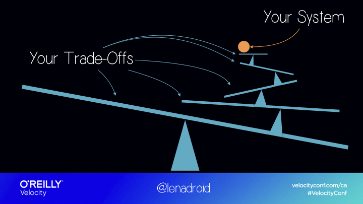
Every industry wants to make more progress by combining their and our research and solutions. Our work helps other fields and domains to better achieve their goals. And it can be immensely useful for us to understand how to relax certain limitations or fine tune certain trade-offs.
Understanding what’s at the core is a powerful tool to navigate the complexity of ever-changing options and tools, and it helps us to compose correct solutions to improve the options we have.
Turns out it’s not so easy, there are some obstacles on our way!
There Is A Big Gap Between Theory And Practice
It’s challenging to understand what “correct” means for our systems. Most of the theoretical material is not approachable enough, it is notoriously hard to grasp. It often doesn’t include the information necessary to successfully bring this theory into practice. Production systems have to modify the theoretical algorithms and adjust them to work in real environments. Many of them don’t reveal the specific details important for practical solutions. And even slight misunderstanding of the details of the protocol destroys its correctness. So we need to do additional work to guarantee that implementation is still correct.
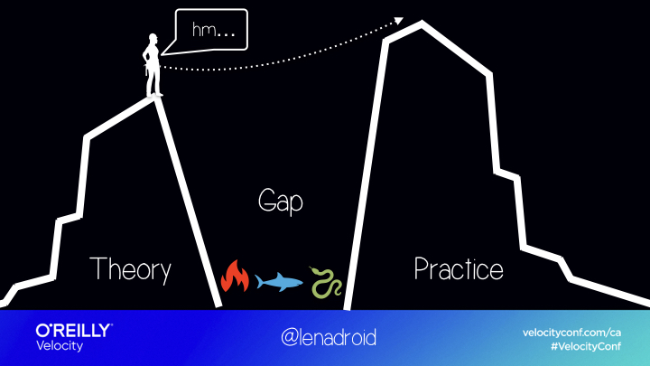
Hard To Verify And Maintain Correctness
It’s challenging to verify and maintain correctness of distributed systems in real-world environments. It could sound perfect on the paper but could be inefficient or hard in practice. It can sound unrealistic in theory but be perfectly acceptable in practice. There are many things that can go wrong both in the algorithm logic and its implementation that are hard to detect.
Correctness Isn’t Always A Priority
On the other hand, correctness doesn't always happen to be a priority. There are deadlines, competition, and customers who need solutions faster. It can happen that the end-system will be rushed and not properly correct. This means a team might not have time to properly discuss and systematically address real reasons behind rare “intermittent” errors which will happen again lead to more errors in the future.
How Can We Improve?
We can improve in many directions. One of them is emphasizing and putting more focused efforts to improving correctness, to make sure we are able to build and maintain systems that keep doing exactly what we expect them to do.
Another one is improving understanding of how they work as it helps us reduce the complexity and possible mistakes, and makes us more prepared to face the challenges that come up.
When we aren’t implementing distributed algorithms and concepts directly, we definitely rely on systems that do. At the point where what we build intersects with other domains and fields, understanding fundamentals concepts and trade-offs becomes extremely relevant.
If you are promised some performance and consistency, how do you actually make sure those guarantees are provided at the exact level you need?
Simple Problems Become Hard
When several computers are talking to each other, trivial problems become hard problems, and they accumulate. Distributed systems are hard to understand, hard to implement, and it’s hard to keep them correct in practice.
I think there are many ways to show why. Recently, I had a chance to explain it to someone from the field of bioinformatics, who was wondering why they needed to make trade-offs between important properties in distributed setting.
Ordering
The first thing that came to my mind was ordering events. Ordering is easy on a single machine, but when messages are sent across network, it’s hard! We can’t rely on physical timestamps because physical clocks on different machines tend to drift. For ordering in distributed systems, we often apply logical clock, or simply speaking, counters that are passed around between nodes.
Because of asynchronous nature of distributed systems we can’t easily establish the compete order for all the events, because some of them are concurrent! What we can do is figure out which events are concurrent and which events happened before one another. And even with such a simple task, we already need to make some decisions.
For example, would we be okay if the system told us that events are ordered, but in reality they turned out to be concurrent?
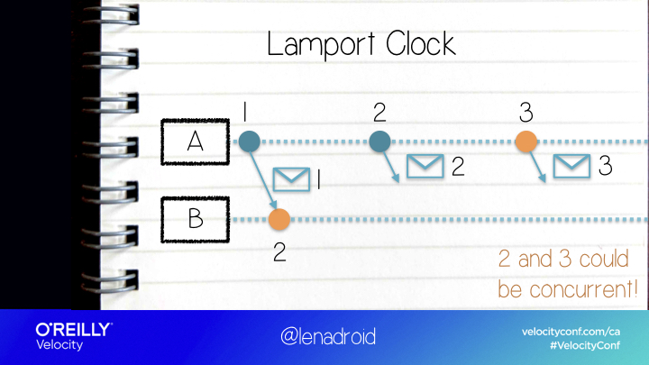
Or do we need to know for sure, that events really are not concurrent when we can order them?
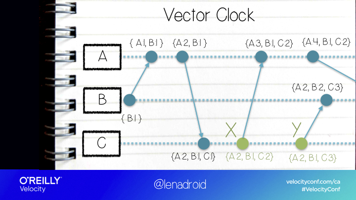
Agreement
We can’t simply order concurrent events, and sometimes, we still need to decide on the order of operations, on a value, a sequence of values, or anything else.
Turns out that getting several machines to choose the same thing is another situation where we have to ask ourselves questions and determine what’s right for us.
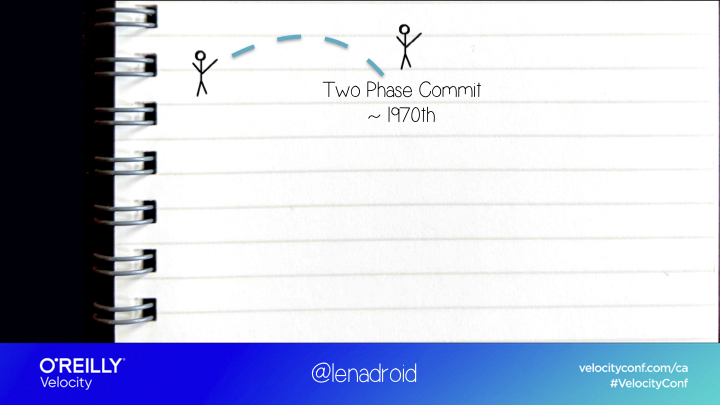
For example, Two Phase Commit is one of the solutions where our nodes can all agree on something.
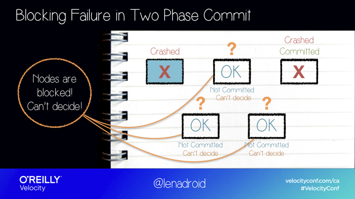
It works, as long as our nodes don’t fail.
If some of the nodes crash, to prevent any possibility of inconsistent data, the system just blocks until the crashed nodes come back, which might never happen, or take a very, very long time.
So the algorithm is safe but isn’t live.
What if it’s not something we can accept and we really need a system to respond?
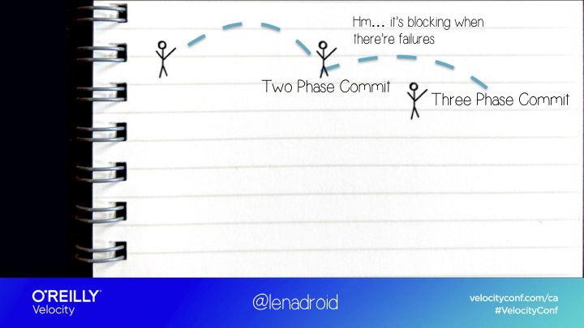
In this case, we might have another possible solution - three phase commit. It doesn’t block when there are failures.

But when there’s a network partition ...
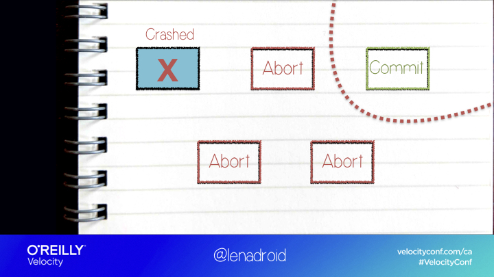
The two isolated sides of the network can come to two different decisions after they time out, and the system will end up in an inconsistent state.
So here we have the opposite: system is responsive and live, but it’s not safe because different nodes can decide on different values.
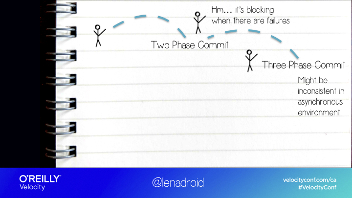
If we are okay with any of these two options, that’s great!
What should we do if we want data to be always consistent and the system to be responsive?
Impossibility Result
The impossibility result proved that actually, there isn’t a deterministic algorithm that will always terminate and come to a decision in a fully asynchronous environment, with even one possible failure.
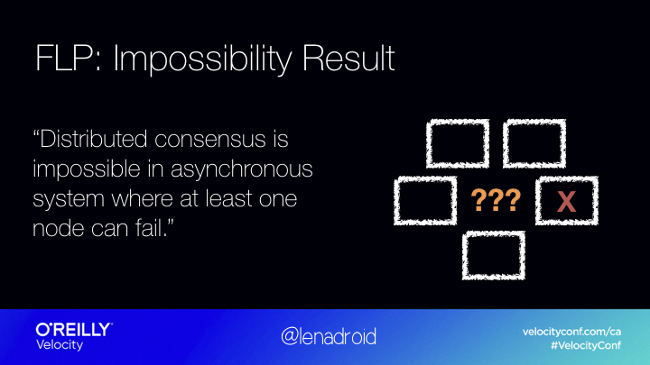
The main thing we can learn from this result is: if we want to solve agreement in practice, we will have to rethink our assumptions to reflect more realistic expectations! For example, we can put an upper bound on maximum message delays, and determine what is an acceptable number of failures for our system.
If we change our assumptions, we can solve distributed agreement in multiple ways!
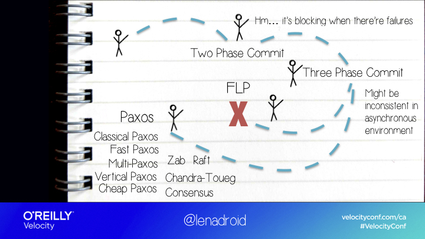
Paxos
The most famous solution is Paxos algorithm, which is known for being hard to understand, and hard to implement correctly.
It actually works, but it only under the condition, that majority of nodes have to be up, and the maximum message delay is bounded.
In Paxos any node can propose a value, and after going through a “Prepare” and “Propose” phases, all of the nodes should agree on the same value.
The majority of nodes need to be up, because if during each phase quorums intersect, there will always be at least one node that remembers what the most recent proposal is, which prevents agreeing on an old value.
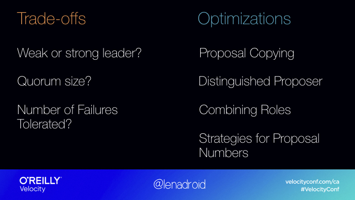
There are many optimizations to the initial algorithm that are applied in practice to make it more efficient. There are also many possible variations to consensus algorithms based on what trade-offs they chose.
For example, how much work is done by leader. Having a strong leader can be good or bad, depending on how frequently it fails and how hard it is to reelect. Another trade-off is how many node failures can we forgive and how big should the quorum be.
Somewhat underrated criteria is how understandable and implementable the algorithm is in practice. Raft is popular because it was more understandable and is now applied in many widely used projects.
Still Discovering New Trade-Offs
But what’s even more interesting is that even though the topic of consensus and agreement isn’t new, we are still discovering many new optimizations and trade-offs.
In classic Paxos the majority needs to be up to make sure all the quorums will intersect. But it turns out we can rethink and simplify the majority quorum requirement. Turns out, it’s enough only for quorums of prepare and propose phases to intersect, which gives us much more flexibility to experiment with quorum sizes and performance in each phase!
The main point is, revealing new performance and availability trade-offs up to this day, helps us expand the spectrum of our choices in practice. Consensus is just a building block, but it can be used to solve many common problems, like atomic broadcast, distributed locks, strongly consistent replication, and many more!
Please check out Dr. Heidi Howard's paper "Distributed Consensus Revised". It's one of the very best papers on the topic.
Consistent Replication?
Replication is a massive part of any distributed system today.
We can actually use consensus to implement strongly consistent replication, but one of the downsides of it is performance. Another side of the spectrum is of course, eventually consistent replication, which is very fast, but then clients can see inconsistent data. In practice, we often want better performance and still maintain stronger consistency, which can be tricky.
So in some cases, we can come up with solutions that are faster than consensus, and are more consistent than eventual consistency.
One of the interesting examples is Aurora, where they avoid consensus for I/O and a couple of other operations. They use quorums for writes, but don’t use them for reads. In reality, replicas might be storing different values, but when client performs a read, because the database maintains consistency points, it can look directly at nodes where data is known to be consistent, and return the correct data to the client.
Conflict Free Replicated Data Types (CRDTs)
Another interesting example is Conflict-Free Replicated Data Types.They can provide strong eventual consistency with both, fast reads and writes, and staying available even during network partitions, without using consensus or synchronization. However it’s only possible if we can have rules for resolving any concurrent conflict.
In other words, we can only use this technique if it’s possible to merge concurrent updates using some function that can apply them in any order, and as many times as we want, without corrupting the result.
This is a perfectly acceptable example, where all the updates are additive, so they perfectly satisfy this requirement.
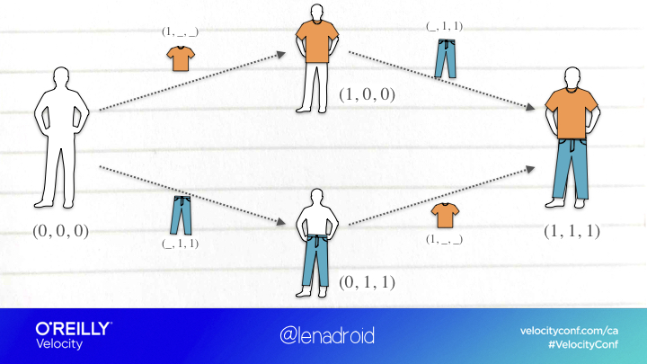
This one, on the other hand, isn’t as obvious, as we don’t have clear rules to resolving conflicts with simultaneous updates of this kind.
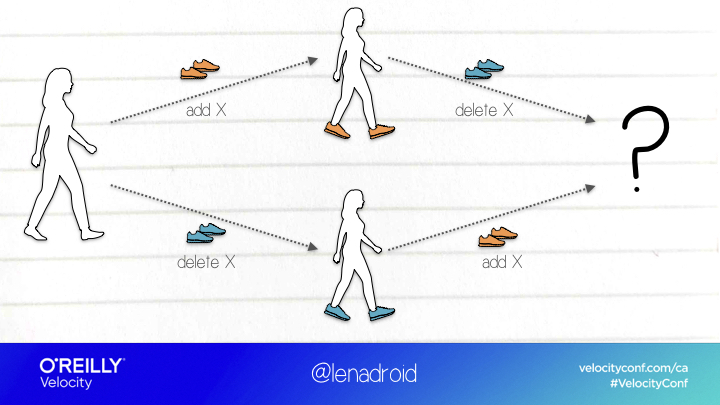
Azure Cosmos DB uses CRDTs for conflict resolution behind the scenes of concurrent multi-master multi-region writes. Redis and Riak also use CRDTs.
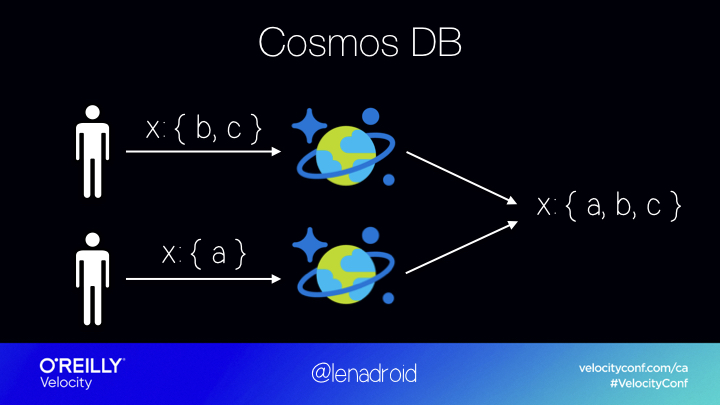
Failure Detection
If we teleport into another topic in distributed systems, we will always find more trade-offs.
Failure detectors is one of the essential techniques to discover node crashes in a distributed system. They can be applied in agreement problems, leader election, group membership protocols and in other areas.
We can measure the efficiency of failure detectors by their “completeness” and "accuracy”.
Completeness shows whether some or all nodes in the system discover all the failures. Accuracy measures the level of mistake a failure detector can make in suspecting the failure of another node.
Turns out, even unreliable failure detectors can be extremely useful in practical systems, because we can improve their completeness by adding a gossiping mechanism that spreads the knowledge about failures to all the nodes.
Why Does All Of This Matter?
Trade-offs may take different shapes and forms, and we can be really flexible if we know how to use them and where to look.
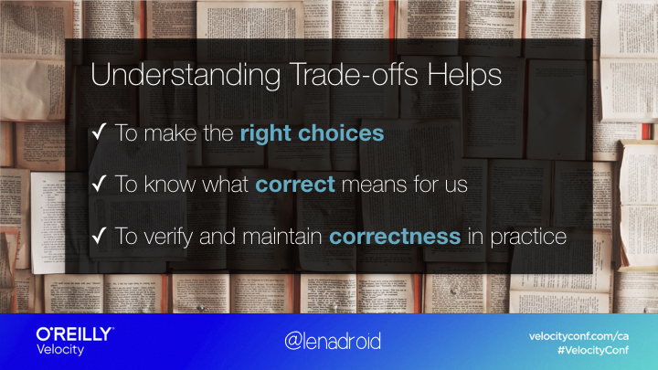
Many products are built around the algorithms and trade-offs. These products make certain choices for us, and we make choices by using certain products. Uneducated choices can result in delays and data loss. For some systems, this can lead to losing clients and large amounts of money. For other systems, it can result in slow reaction, or wrong order of actions, that poses an actual life threat. Understanding your trade-offs is very important for making the right choices, for knowing what correct means, and for verifying correctness of our systems in reality.
Verifying And Maintaining Correctness In Reality
After we are clear with our decisions and trade-offs, how do we maintain correctness in real systems?
One of the frequently used options to verify distributed logic on safety and liveness, especially safety, is system model checking. Model checking is useful because it explores all possible states your system can end up in. There are quite a few tools out there. TLA+ is pretty famous, there are more emerging techniques like semantic aware model checking.
To verify correctness of real, running implementations of distributed systems, model checking alone isn’t enough.
Not many projects publish information on how they maintain correctness of their systems and verify it. But some of them do.
For example, a variety of system tests for Kafka is run every day and anyone in the world can check and see what is working as expected and what isn’t.
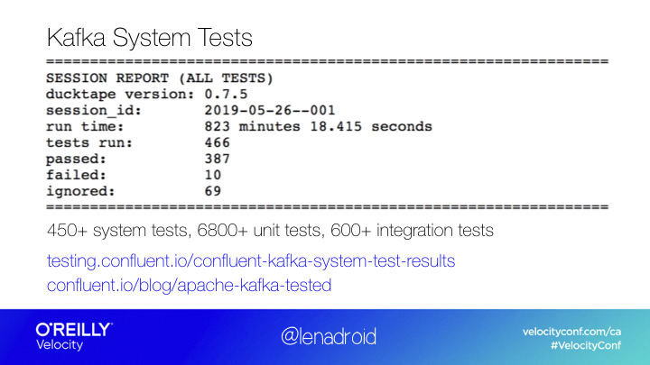Cassandra has a really great write up about their approach to comprehensive testing.
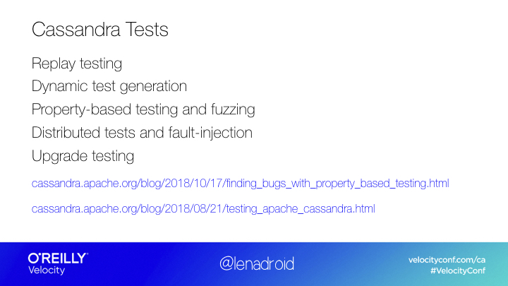I really wish more products, projects, and systems would be more open about efforts they put into testing and correctness verification.
If we look at what it takes to be prepared to run a production level distributed system, there’s quite a lot.
Of course, for small scope scenarios and ensuring that multiple services work together well, unit tests and integration tests are essential. But not enough! There are more techniques we can use. Fuzz testing and property-based testing provide randomly-generated input to your systems to make sure that its fundamental properties are correct based on its specification. I actually worked on a fuzzing project at Microsoft Research and it’s a really fascinating topic in general. Performance tests are useful to collect data on latency and throughput of various components. Fault injection is helpful for checking that the system is available during fault scenarios, and that expected system properties remain correct.
With all of that, an insane amount of reasons behind the most critical errors is in exception handling logic.
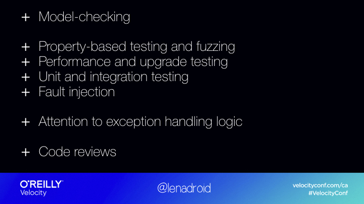
There are some things we can’t fully fix. We need to accept the fact that, in reality after all the tests and checks we’ve written, there will be mistakes anyway. We’re humans, there are context switches, and it’s impossible to know every single thing, there are too many moving parts. We’re never exploring new territory, we’d never make progress if we were afraid to leave the area we’re familiar with. However, we can definitely prepare ourselves better for dealing with unexpected errors, find patterns, and try to address what causes them. That’s why instrumenting your code matters and observability matters. It’s less scary when we’re aware of the possibility and have built the foundation for solving production errors.
Take Aways
Products change fast, and terms that describe their consistency, resiliency, and performance are extremely overloaded. Fundamentals concepts and trade-offs stay and build-up. They aren’t useful in isolation, but knowing them can be essential for for making the right choices and maintaining correctness in practice. Correctness is especially important when our systems are trusted in scenarios where a specific level of responsiveness and safety is a strong requirement.
If you are building something, ask yourself a question: can this be misunderstood? Complexity is like a big bullet proof wall around your project, it makes it hard to explain, build, use, and improve. Try to make systems you build understandable to others, because understanding contributes to correctness.
Correctness isn’t easy and doesn’t come for free. You have to work on it and make it a priority. Not just at a level of one engineer willing to do it, but at the level of the entire organization. Don’t trust your system to just work: Test it, Verify it, and be ready when things fail. Show your users and customers what techniques and efforts you are putting into verifying your systems.
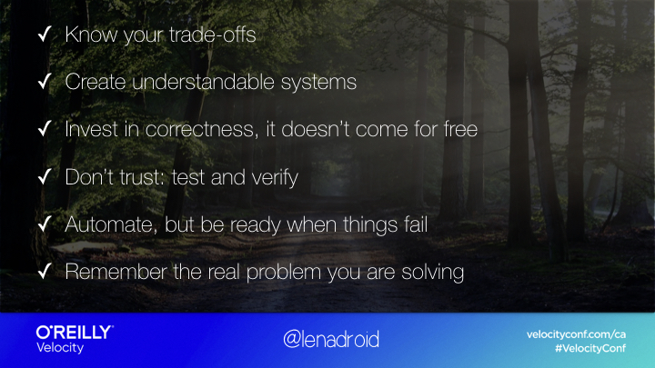
Think of areas related to your work that aren’t getting enough attention and are important. If you ever have an opportunity to chat with people different than you, who work in another area - do it, to learn more about what challenges they face in their work and what trade-offs they’re making. Ask questions. Share the same with them about your work. It will help you be a better engineer.
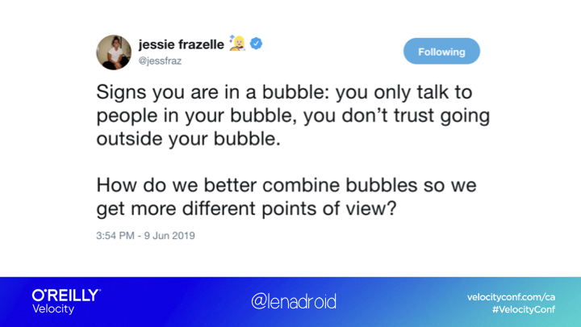